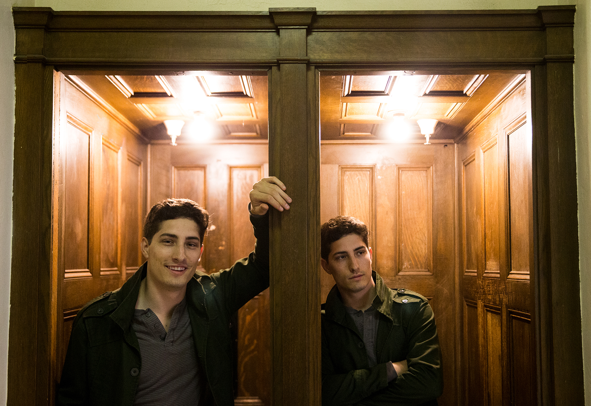
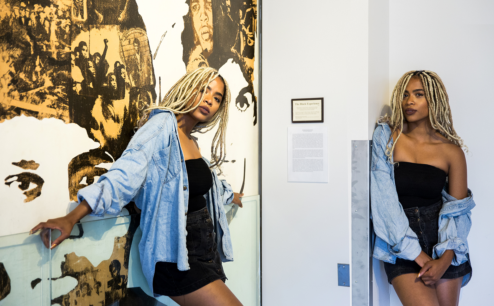
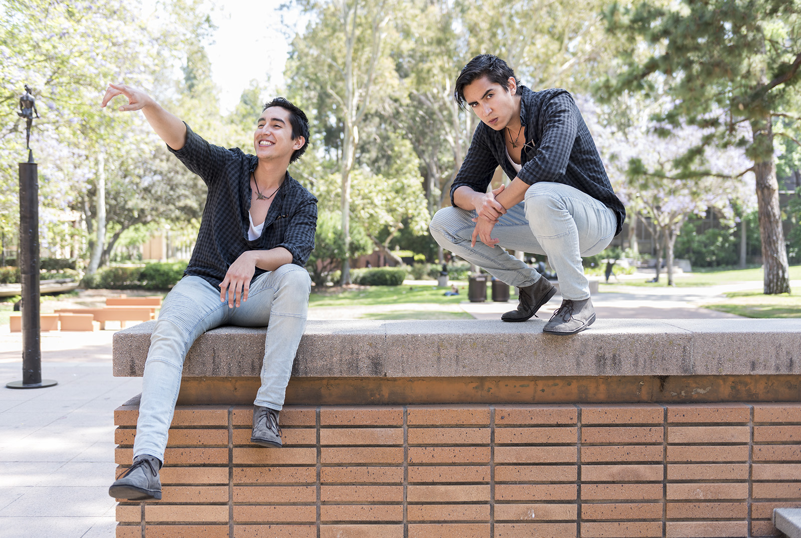

Dennis Woullard’s family tells him his eyes were as big as plates when he saw a stage production of “The Lion King.”
The actors in the production inspired the fourth-year theater student to pursue acting, but he said the lack of Black role models in Hollywood led him to look elsewhere for inspiration later in his studies.
Most of his favorite actors are white, not because their acting skills are superior, but because the roles in which they are cast are more complex. Much like many Black Hollywood actors, Woullard said he is often typecast in simplified parts or roles intended for only Black actors.
Other students and aspiring actors have also experienced the effects of both appearance-based and personality-based typecasting, while some have only just begun to navigate typecasting as they transition to acting outside of UCLA.
An actor is at the mercy of luck and looks in the entertainment industry, said Professor J. Ed Araiza, the area head of the UCLA School of Theater, Film and Television’s MFA acting program. Until they have built a certain amount of prestige, actors can expect to play within their types early in their careers, Araiza said.
However, if one portrays a particular kind of character for too long, the actor can sometimes have trouble breaking out of that mold later on, said Professor Brian Kite, chair of the department of theater at UCLA.
“I tell (my students) that you have to know how people are going to try to pigeon-hole you, and you’ve got to be ready to do that, and yet, push against the envelope they’re gonna put you in,” Araiza said.
Student actors recalled their encounters with typecasting both at and outside of UCLA as well as their relationship with the "type" of character in which they are often cast as they begin to audition for roles post-graduation.
“Are you an actor? Or are you a Black actor?”
Woullard was advised to prepare a telling question to ask agents and managers who came to see him perform and possibly sign him at the Undergraduate Actor Showcase in April. Woullard decided he wanted to know how his potential representative would advise him to navigate his career as an actor of color.
But one agent was already prepared with a question of his own: “Are you an actor? Or are you a Black actor?” Thrown-off, Woullard replied that he was both.
“No,” the agent said. “You’re an actor.”
Woullard did not sign with him.
His answer revealed his blindness to the experiences of people of color navigating a white-dominated industry, Woullard said.
“It was well-intentioned, but … it just reminded me how easy it is for other people to not think about it if they’re not going through it,” Woullard said.
At UCLA, Woullard has played mostly characters that were originally written as Black.
“It used to be, if you can do the part better than anyone else, then you’ve got it, and I kind of miss that,” Woullard said. “But now it’s more about how people see you.”
In his second year, Woullard auditioned for the theater department's production of “Bat Boy: The Musical.” However, he received a callback for only one character: a reverend at a Baptist church. Woullard ended up losing the role to a Black woman, but he said he would have rather been considered for a more physically playful character like Bat Boy.
“If I’m good enough to play this character … then I’m definitely good enough to be called back for something else,” Woullard said.
The director of "Bat Boy: The Musical" was not immediately available for comment.
But Woullard has also landed parts at UCLA that transcend his type. In Act III Theater Ensemble’s “Proof,” he portrayed a math professor and father. White actors played his daughters.
“It was just nice not having to think about it,” Woullard said. “It really was.”
Woullard said he hopes to continue auditioning both for roles within and outside of his type and eventually make strides as a Black chameleon actor, few of which he said exist currently in Hollywood.
“If I book these roles that could be any race and show people that these films can make money with Black leads, then things will change at large," Woullard said.
“You're all in the same ballpark.”
Aaron Newman and around six other young men waited to audition for an HBO series in pressed shirts and ties. The fourth-year theater student tried to distinguish himself with a blazer and a pocket square.
The role called for young, handsome and elegant actors – the perfect ingredients for a waiter at a 1920s party. Besides Newman’s accessories, only slight differences in build and hair color separated the hopefuls.
“It’s not like there (are) 12 carbon copies of yourself,” Newman said. “But you’re all in the same ballpark.”
The screen test for the HBO series is representative of his overall experience auditioning for film and TV characters outside of UCLA, Newman said.
Newman has a face that thrives in the past and an energy that exudes intelligence and charisma, he said – like a best friend or a boy next door somewhere in between the 1920s and the 1960s.
His role during his second-year in the department’s production of “Indigo at Midnight” as the male object of a woman’s imagination encapsulates his type, he said. He relished playing the classic 1940s dreamboat.
“One of the reasons that type adheres so well to me is that I sit so comfortably in it,” Newman said.
However, Newman said the finite pool from which actors are cast at UCLA has allowed him to exceed his type on several occasions. Act III’s “Dogfight” required Newman to alternate between around six miscellaneous characters, including a lounge singer, a sergeant and a tattoo artist.
“That sort of thing was really fun for me because I got to really play around with variety and how I could physically transform myself,” Newman said. “It forced me and encouraged me to play very much outside of (my) type.”
“I didn’t grow up understanding typecasting.”
Priscilla Walker was one of two Black girls admitted into an elite arts program at her new high school in Culver City during her senior year. But another girl in the group questioned the fourth-year gender studies student’s merit, pointing out what she deemed an unfair decision to admit a transfer student into the exclusive group.
Walker assumed the skepticism was directed at her newcomer status. But now, the Afro-Latina actress wonders if race was involved, considering the majority of the lead roles in the program's shows went to white students, she said.
“I didn’t grow up understanding typecasting, but I grew up understanding my color,” Walker said.
Walker moved to Culver City after training in drama at an arts school in Florida for two years. Despite her acting background, she never landed a main role in a production for her new school’s arts program, though she felt she could have carried a lead.
“I didn’t see it like that back then,” Walker said. “But when I think about it now, I definitely feel like even in the theater you can go through typecasting.”
Walker typically lands auditions for “ethnically ambiguous" roles, she said. She recently faked scrubbing her face in an audition for a Proactiv commercial that called for a trendy, young girl sans acne who was ethnically ambiguous.
“Honestly, I get a lot of different things because I have a different look,” Walker said.
Friends of Walker's who are also Black have been forced to dumb themselves down in auditions, she said. Her father, who was also an Afro-Latino actor, rarely booked lead roles.
Despite others’ experiences, Walker maintains a positive outlook on her future chances.
“I am hoping that now is the time for ethnically ambiguous people, for African-American people, for everybody to get into acting," Walker said. "Hollywood is taking a change, which is extremely exciting and something to look forward to."
“There are people like us – like me – who are actually going on a different path.”
Yiji Zhao first came across American typecasting when he watched “21 & Over.”
The film features an Asian-American protagonist, who is pressured by his parents to study medicine but rebels against them at the encouragement of his white friends.
Typecasting Asian-Americans in such a way does not accurately reflect the experiences of the entire Asian community, Zhao said.
“I think the industry, or the world, needs to see besides that,” Zhao said. “There are people like us – like me – who are actually going on a different path.”
The MFA acting program at UCLA shielded him from such racial typecasting, Zhao said. He portrayed a range of roles in MFA productions, including a Russian soldier and an Egyptian King.
Outside of MFA stage productions, Zhao said he was often cast in somber, intense roles. The story of another graduate student’s thesis film required Zhao’s character to cry, yell and beat a house robber. He must have a dark side that directors can sense, he said.
Despite his knack for drama, Zhao wants to experiment with comedy in the future to satisfy his mostly carefree and goofy personality.
In the professional world, Zhao actively avoids auditioning for stereotypical roles similar to that of the main character's in “21 & Over.”
“I actually thought about going to audition for the commercial that requires a computer geek-ish, tech-savvy guy, but then I realized I don’t want to do that because there’s so many Asian guys who are already doing that,” Zhao said.
"Perhaps it's not that far from who I naturally am."
Lea Madda has summer plans to transform into a narcissistic horse who enjoys primping her mane with ribbons.
The graduate acting student’s character Molly in the Will Geer's Theatricum Botanicum's production of "Animal Farm," exemplifies the shallow, naive young female role into which Madda is usually typecast.
"Maybe I don't want to overtly admit it, but perhaps it's not that far from who I naturally am," Madda said. "Typecasting tends to be very similar to who you are, so it makes your job as an actor easier because you just get to play yourself."
But Anton Chekhov’s “Three Sisters” forced Madda out of her comfort zone. She hoped to land the role of Masha, the sassy, sexual middle sister. Instead, Araiza, the director, cast Madda as Olga, the strict, conservative backbone of the sibling trio.
"You don't come to grad school to do what you already know how to do," Araiza said. "You're here to do things you don't know how to do yet, and secondly, to do roles you might not normally be cast in for a while in the professional world."
Although Madda is comfortable in her type, she eventually hopes to branch out into more complex female roles. For now, Madda is grateful for any part, ditzy or astute, as long as it doesn't involve nudity or a lifelong sentence to children's television.
"I just don't have the privilege to be picky right now," Madda said.
"I'm not even Mexican or American."
Nicola Varoli was one of six Latinx actors cast in the department of theater's winter quarter 2017 production of "Los Vendidos."
The play centers on a fictional American store selling Mexican-American robots, each of which represents a different stereotype, from a field worker to a 1960s gangster. The fourth-year theater student played a robot programmed to criticize his fellow Mexican-Americans.
"The funniest thing is that I was playing the Mexican-American," Varoli said. "I'm not even Mexican or American.”
At the end of the play, the actors broke the fourth wall, directly addressing the department of theater board members in the audience.
The Latinx students broke character and voiced their concerns about a lack of opportunities for them in the department. Varoli expressed that he would not likely have been included as a lead in another department of theater show had the Peruvian-Italian student not been cast in "Los Vendidos" as a Mexican-American.
"We're not here to criticize," Varoli said. "Well, maybe a little bit. But we're constructively criticizing a problem that should be dealt with."
As Kite, the chair of the department of theater, sat in the audience with the vice chair, he said he felt like the students were speaking directly to him.
"I'm not sure what their intention was, exactly," Kite said. "But it had a fairly profound effect on me and I think was a very effective way to communicate some of their concerns."
Varoli said directors often approach him when they need an actor to portray a Latino character. He doesn't mind performing in Chicano theater plays or as a minority in student short films, but he does not want to be limited to Latino or Mediterranean roles for the rest of his career.
"There's nothing wrong with playing someone whom I identify with as a Latino," Varoli said. "I love doing that. But if that's what I'm going to be playing for the rest of my life, and if that's how people are going to see me, that's an issue I have because there's more to me than just that."